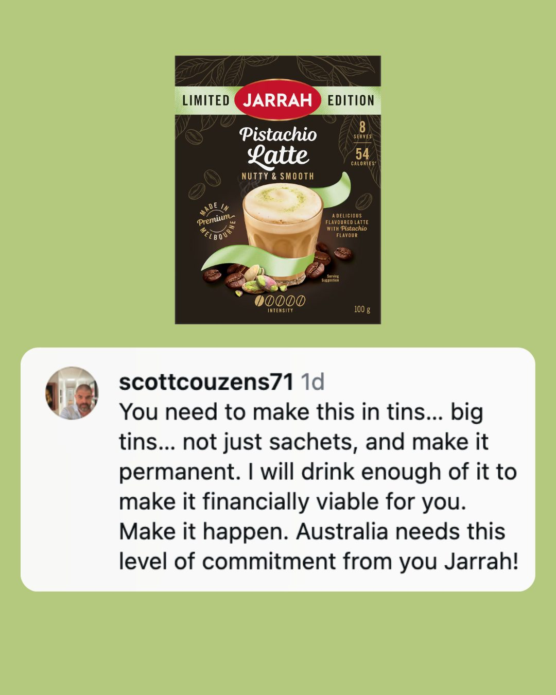
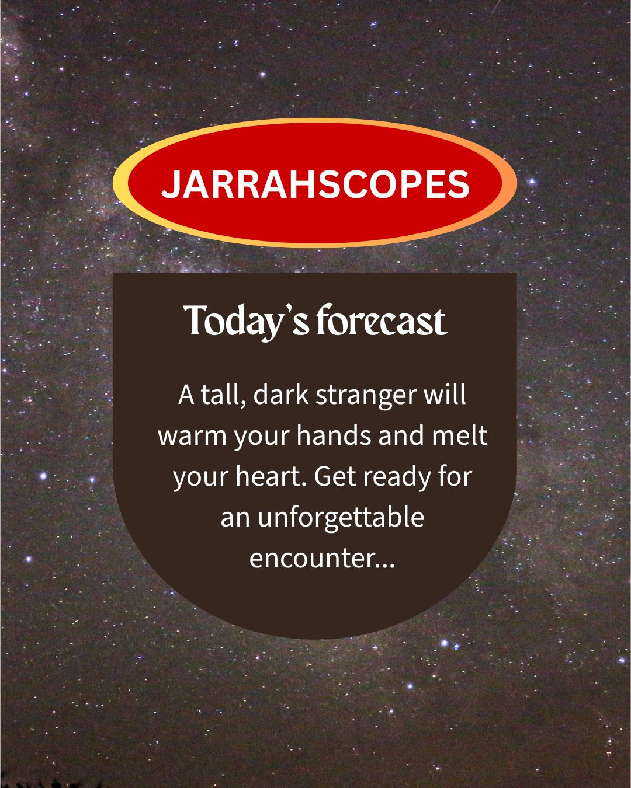
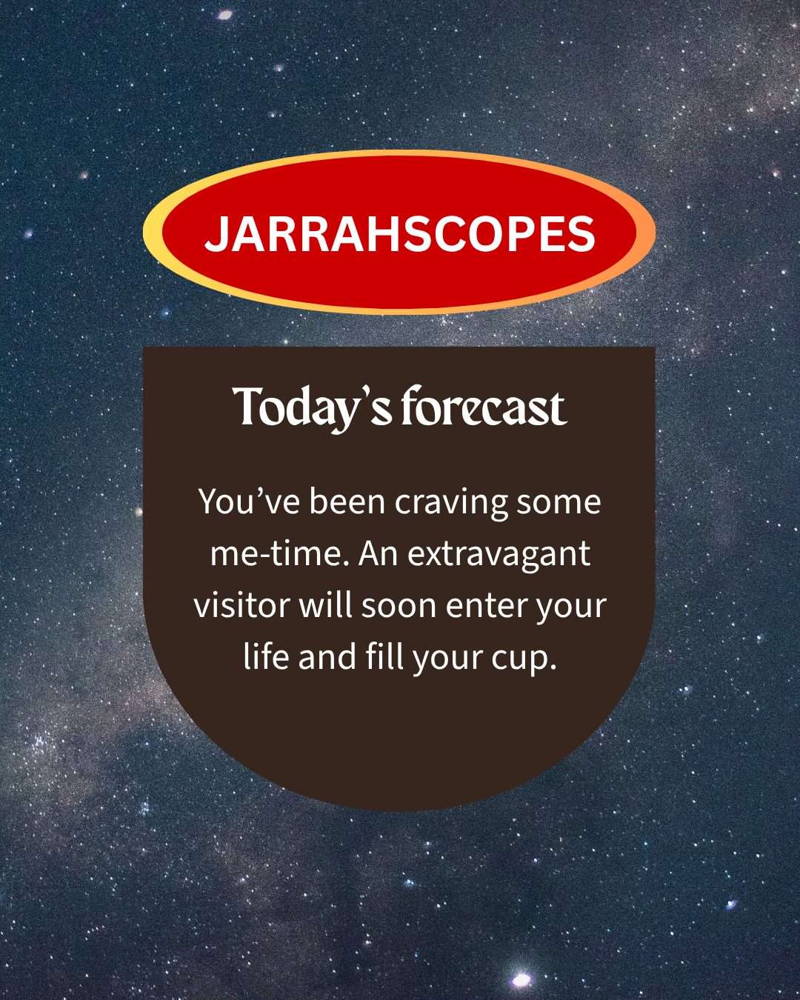
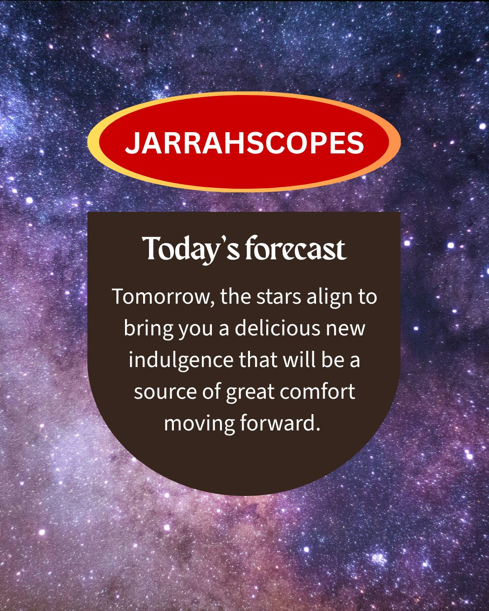
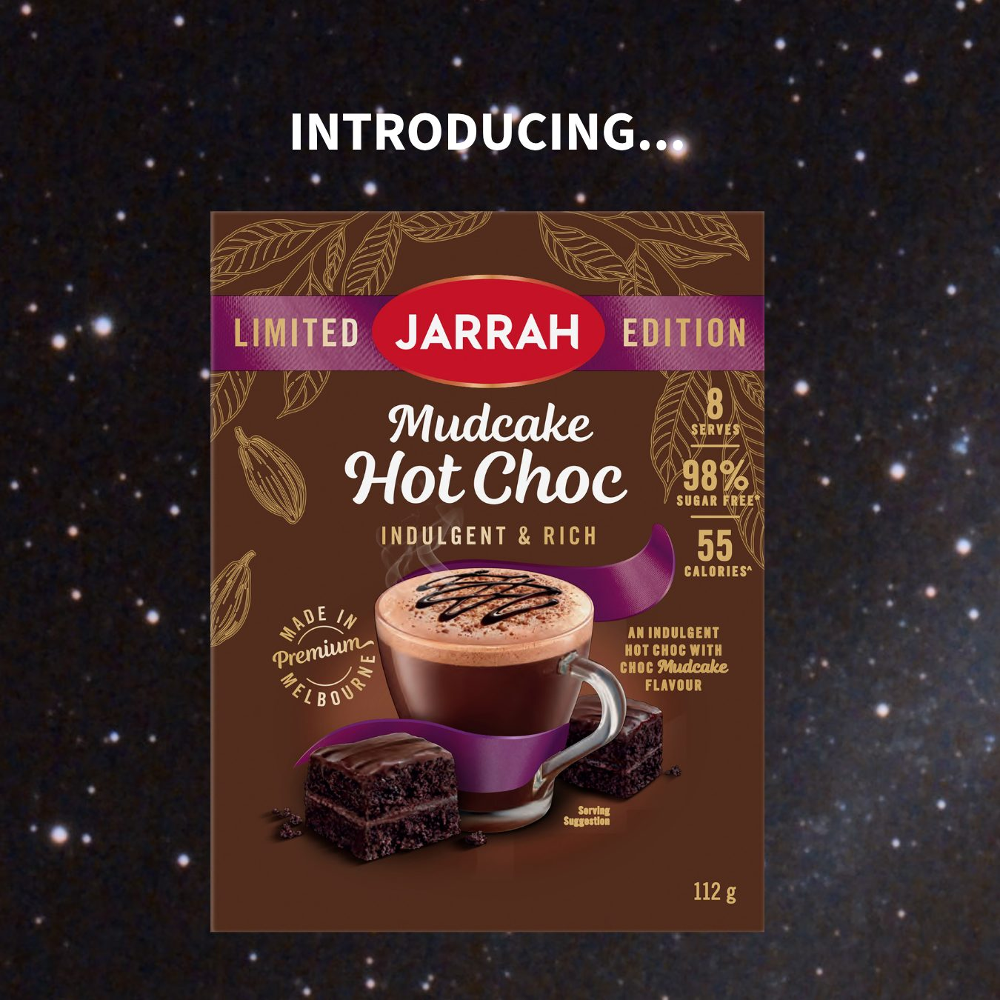
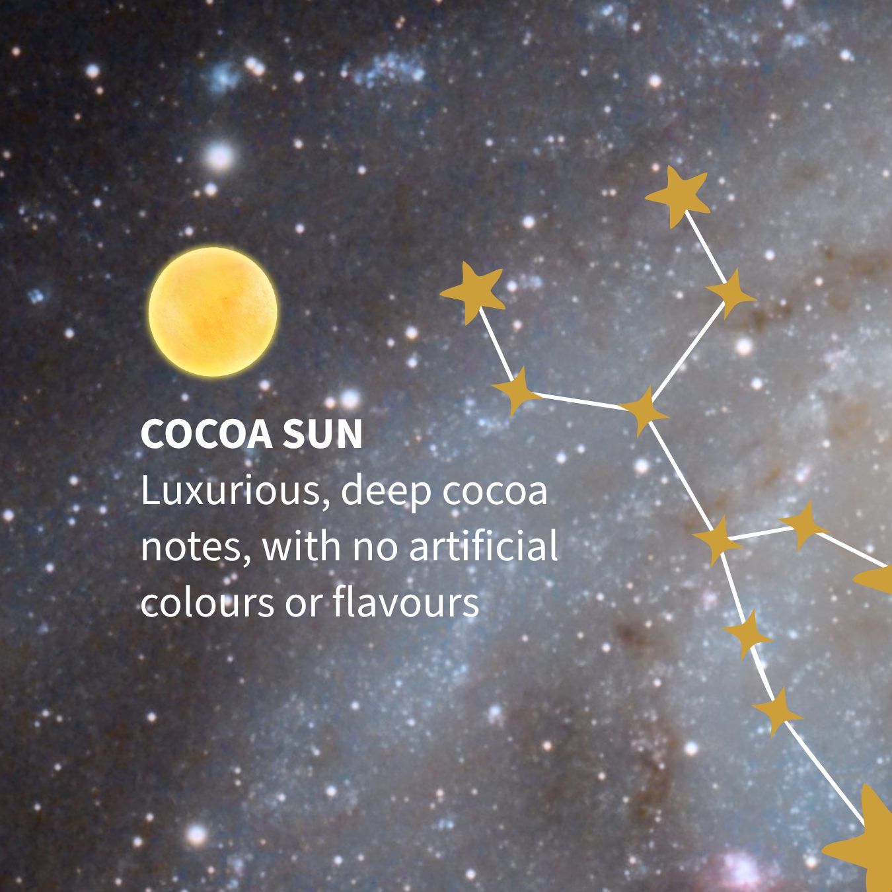
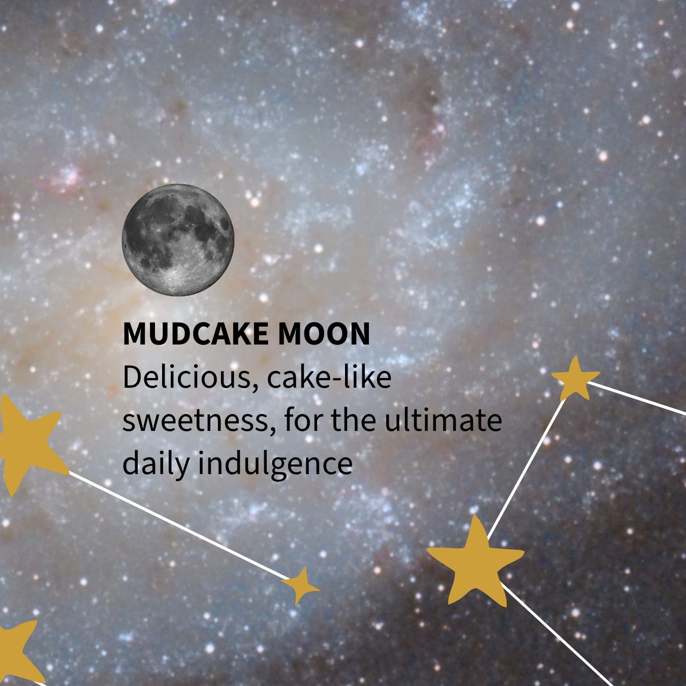
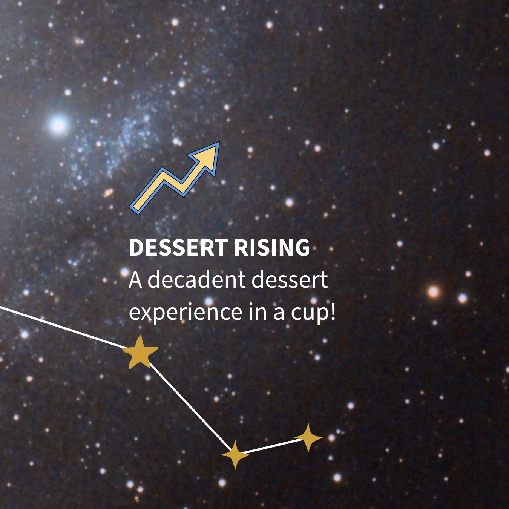
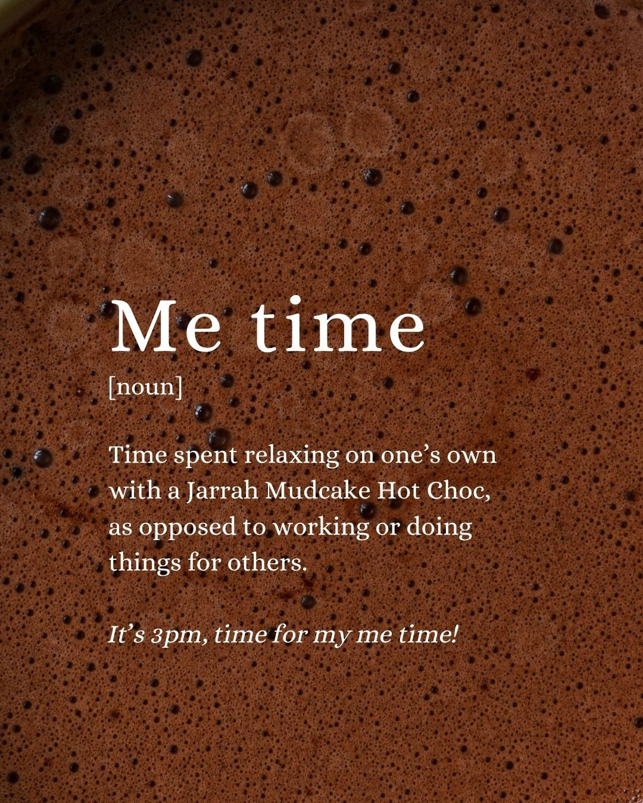

As Social Media Manager, I developed and executed social media content strategy, content calendars, content creation, and community management across Facebook and Instagram. I generated original ideas, researched and participated in trends, shot and edited video, designed posts in Canva, wrote captions, scheduled posts in Meta Business Suite (for Facebook and Instagram), and managed UGC creator and influencer partnerships.








